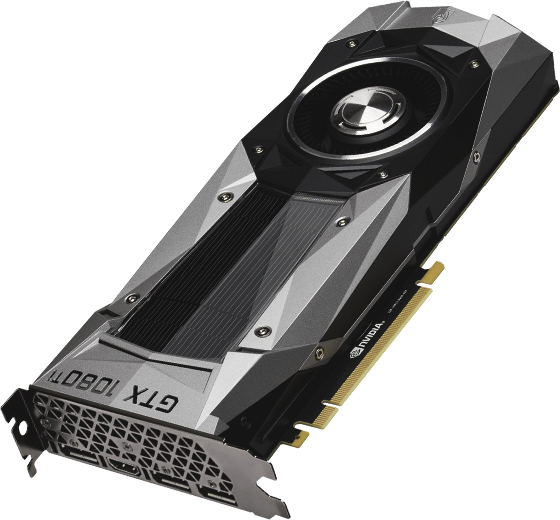
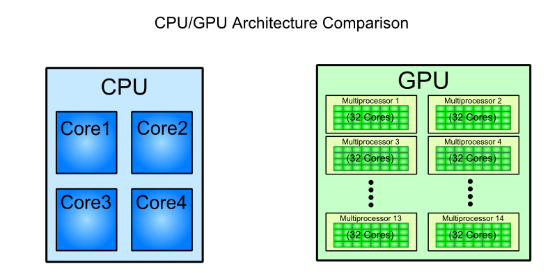
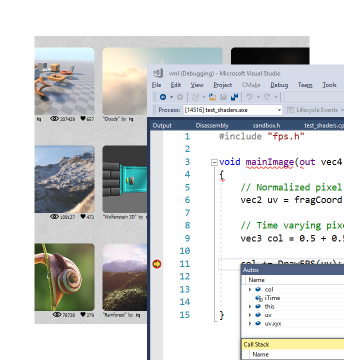
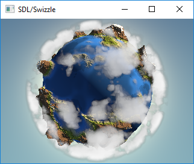
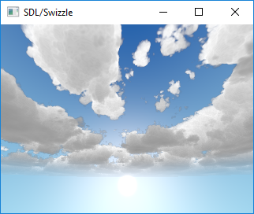
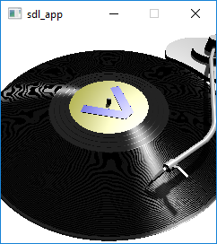
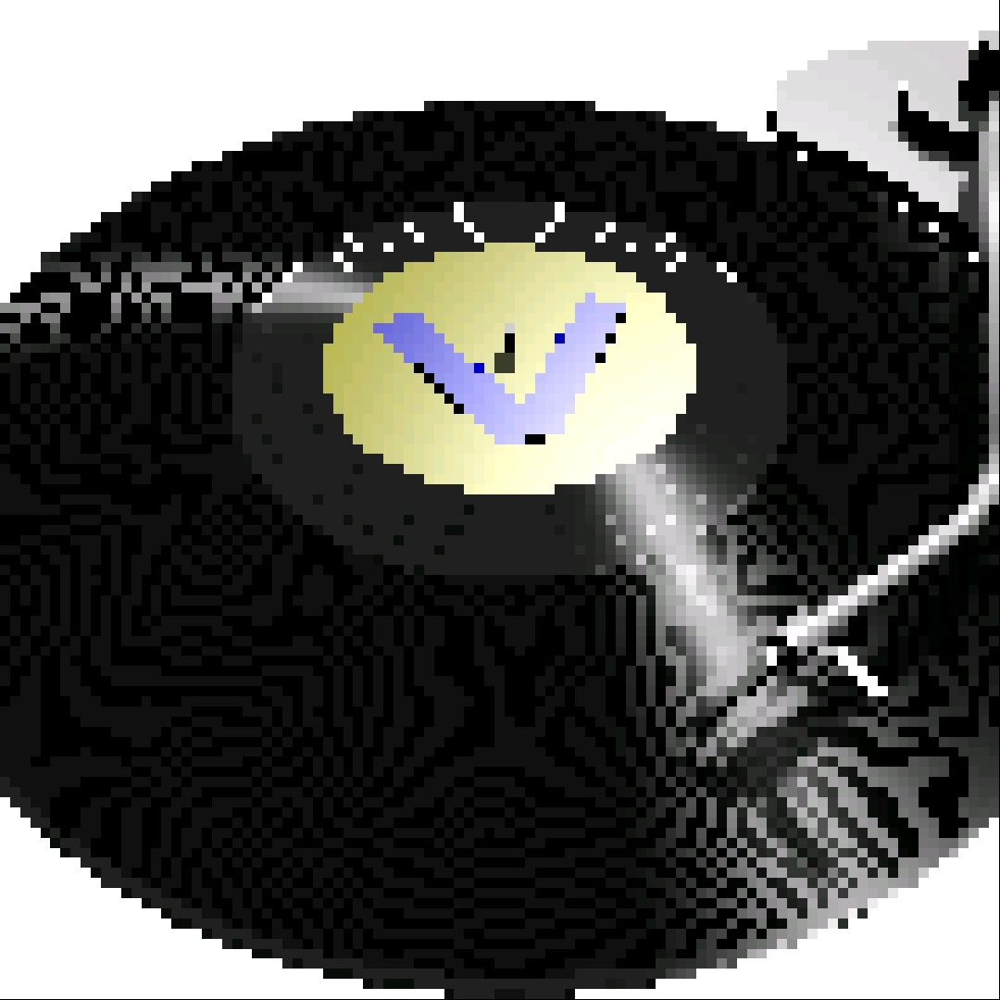

/*
* red mesh red shaded mesh
*/
surface basic() { surface simple(color myOpacity = 1) {
Ci = (1.0, 0.0, 0.0); color myColor = (1.0, 0.0, 0.0);
Oi = 1; normal Nn = normalize(N);
} Ci = myColor * myOpacity * diff;
Oi = myOpacity;
}Rapid Prototyping of Graphics Shaders in Modern C++
Valentin Galea
More than 10 years in mobile, indie and AAA games

Agenda
Intro and Motivation
Shading Languages
C++
Showcase
| questions welcomed throughout |
Shaders
A computer program that is used to do shading
Depicting depth perception in 3D models or illustrations by varying levels of darkness
— Wikipedia
A computer program that tells the computer how to draw something
— Pixar RenderMan 1988
Shaders on Modern GPU’s

- Computer graphics
- Image manipulation
- Highly parallel computing
Why on GPU

Types of Shaders

Vertex
Geometry
Tessellation
Fragment(Pixel)
-----
Compute
Pixel/Fragment Shader

| We will concentrate on (procedurally generated) image-only shaders |
Motivation
I wanted to create real-time effects like…
on more limited devices…
…because of long commutes!
also because GPU driver render bugs
| taken on desktop PC / Nvidia GTX 1060 |
Other advantages

+ Bragging rights :)
+ Debug / Decompile algorithms from
shadertoy.com
glslsandbox.com
+ Unit Test shaders!
Shading Languages
Pixar RenderMan Language
Shading Languages History
For real-time rendering:
Early: ARB assembly, Cg
OpenGL shading language (GLSL)
DirectX High-Level Shader Language (HLSL)
PlayStation Shader Language (similar to HLSL)
A glimpse of GLSL
varying vec3 N;
varying vec3 v;
void main(void)
{
vec3 L = normalize(gl_LightSource[0].position.xyz - v);
vec4 Idiff = gl_FrontLightProduct[0].diffuse
* max(dot(N,L), 0.0);
Idiff = clamp(Idiff, 0.0, 1.0);
gl_FragColor = Idiff;
}A glimpse of HLSL
float4 main(
float3 Light: TEXCOORD0,
float3 Norm : TEXCOORD1) : COLOR
{
float4 diffuse = { 1.0, 0.0, 0.0, 1.0 };
float4 ambient = { 0.1, 0.0, 0.0, 1.0 };
return ambient + diffuse * saturate(dot(Light, Norm));
}GLSL vs HLSL
Procedural, step-centric (C like) | Object oriented, data-centric (C++ like) |
Compilation done in driver | Client side compilation |
|
|
GLSL vs HLSL (cont.)
Vector type: | Vector type: |
Matrix type: | Matrix type: |
…textures, samplers, precision modifiers etc | |
Shading Languages Future
Basically C++ (usually via LLVM)
Metal Shading Language (C++14, Apple)
only on iOS devices
CUDA Heterogeneous Computing (C++11, NVidia)
only for computing, not graphics
HLSL 6.x (C++98’ish, Microsoft)
not released yet
Let’s see how C++ can help out, NOW!
The Plan
 Pick a shading language and twist C++ to accept it as source code!
 BONUS: use the preprocessor for transcription back to the original language(s)!
BONUS: use the preprocessor for transcription back to the original language(s)!
The Plan (cont.)
obligatory preprocessor layer
vector (linear algebra) types
swizzle support
matrix types
operators
"standard library" utility/math functions
Place Your Bets
We will chose GLSL as it’s used on desktop, web and mobile
| only a subset of it - concentrate on procedural graphics thus minimize/eliminate inputs (textures, vertex data, etc) |
Languages: Declarations
GLSL | HLSL | C++ |
C-style types and arrays | ||
C-style | ||
|
| both (preproc abstraction) |
Languages: Arguments
GLSL/HLSL | C++ | Macro glue |
|
|
|
|
|
|
|
|
|
Vectors and Matrices
// vectors are generic
vec2 texcoord1, texcoord2;
vec3 position;
vec4 myRGBA;
ivec2 textureLookup;
bvec3 less;
// matrices are floating point only
mat2 mat2D;
mat3 optMatrix;
mat4 view, projection;Vector Swizzle
Syntactic sugar for easy referring to components (or combination of)
{ x, y, z, w } | to represent points or normals |
{ r, g, b, a } | to refer to colors ( |
{ s, t, p, q } | texture coordinates |
Vector Swizzle - Examples
subcomponents mix & match
vec4 v4;
v4.rgba; // is a vec4 and the same as just using v4,
v4.rgb; // is a vec3,
v4.b; // is a float,
v4.xy; // is a vec2,vec4 pos = vec4(1.0, 2.0, 3.0, 4.0);
vec4 swiz= pos.wzyx; // swiz = (4.0, 3.0, 2.0, 1.0)
vec4 dup = vec4(pos.xx, pos.yy);l-value assigment
pos.xw = vec2(5.0, 6.0); // pos = (5.0, 2.0, 3.0, 6.0)
pos.xx = vec2(3.0, 4.0); // illegal - 'x' used twiceVector Swizzle - Motivation
vec3 calcNormal( in vec3 pos )
{
vec2 e = vec2(1.0, -1.0) * 0.0005;
return normalize(
e.xyy * map( pos + e.xyy ).x +
e.yyx * map( pos + e.yyx ).x +
e.yxy * map( pos + e.yxy ).x +
e.xxx * map( pos + e.xxx ).x );
}Operators
syntax | equivalent |
| |
| |
"Standard Library"
Math |
|
Common |
|
Utility |
|
Geometry |
|
Specific texture and image sampling … | |
Recreating all this in C++ …
Design of vector<>
template<typename T, size_t N> struct vector : public vector_base<T, N> {vector(); explicit vector(scalar_type s); template<typename... Args> explicit vector(Args... args); ...scalar_type& operator[](size_t i); scalar_type& operator[](size_t i); ... vector_type& operator +=(scalar_type s); vector_type& operator +=(const vector_type &v); ...
vector<> ctor - basic
vector()
{
static_for<0, N>()([this](size_t i) {
data[i] = 0;
});
}
explicit vector(scalar_type s)
{
static_for<0, N>()([s, this](size_t i) {
data[i] = s;
});
}static_for utility
compile-time workhorse!
template<size_t Begin, size_t End> struct static_for { template<class Func> constexpr void operator ()(Func &&f) { f(Begin); static_for<Begin + 1, End>()(std::forward<Func>(f)); } };template<size_t N> struct static_for<N, N> { template<class Func> constexpr void operator ()(Func &&) { /* empty */ } };
vector<> ctor - advanced
template<typename A0, typename... Args,
class = typename std::enable_if<
((sizeof... (Args) >= 1) ||
((sizeof... (Args) == 0) && !std::is_scalar_v<A0>))
>::type>
explicit vector(A0&& a0, Args&&... args)
{
...vector<> ctor - advanced (2)
size_t i = 0; // advances as we consume args
// consume the first one
construct_at_index(i, std::forward<A0>(a0));
// consume the rest, if any
(construct_at_index(i, std::forward<Args>(args)), ...);
}| unary fold expression over comma operator: send every arg to specialized processor function |
vector<> ctor - advanced (3)
void construct_at_index(size_t &i, scalar_type arg)
{
data[i++] = arg;
}template<typename Other, size_t Other_N>
void construct_at_index(size_t &i, vector<Other, Other_N> &&arg)
{
constexpr auto count = std::min(N, Other_N);
detail::static_for<0, count>()([&](size_t j) {
data[i++] = arg.data[j];
});
}vector<> ctor in action
using vec2 = vector<int, 2>;
using vec3 = vector<int, 3>;
vec3 v = vec3(98, vec2(99, 100));
// ^ ^
// | |
// `-- scalar construct gets called
// |
// `---- sub-vector construct gets called
// and then recursively againGodbolt
int main()
{
float a, b;
scanf("%f %f", &a, &b);
auto v = vec3(1.f, vec2(a, b));
printf("%f %f", v.x, v.y);
}-std=c++17 -Wall -O2 (source)
Godbolt (cont.)
| clang (5.x/6.x) | gcc (7.x/8.x) | msvc (2017) |
|---|---|---|
| | |
TRIVIA: gcc’s
cvtss2sdfrom memory is pessimization (https://stackoverflow.com/a/16597686)
vector_base naive impl
template<typename T>
struct vector_base<T, 2>
{
union
{
T data[2];
struct { T x, y; };
struct { T s, t; };
struct { T u, v; };
}
};vector_base naive impl (2)
template<typename T>
struct vector_base<T, 3>
{
union
{
T data[3];
struct { T x, y, z; };
struct { T r, g, b; };
struct { T s, t, p; };
}
};vector_base naive impl (3)
template<typename T>
struct vector_base<T, 4>
{
union
{
T data[4];
struct { T x, y, z, w; };
struct { T r, g, b, a; };
struct { T s, t, p, q; };
}
};vector_base notes
both anonymous struct and union are permitted, only MSVC complains with warning |
union active member switching can be tricky [10.5] but we’ll use only trivial types with trivial assignment |
Swizzle
| We introduce an additional proxy class that allows custom access to the indices and we create all possible permutations (per GLSL/HLSL standard) |
template<class vector_type, class T, size_t N, size_t... indices>
struct swizzler
{
T data[N]; // can differ from vector_type
...
};Swizzle for vector<T, 3>
union
{
T data[3];
struct {
swizzler<0>::type x;
swizzler<1>::type y;
swizzler<2>::type z;
};
struct {
swizzler<0>::type r;
swizzler<1>::type g;
swizzler<2>::type b;
};
struct {
swizzler<0>::type s;
swizzler<1>::type t;
swizzler<2>::type p;
};
...swizzle (cont.)
...
swizzler<0, 0>::type xx, rr, ss;
swizzler<0, 1>::type xy, rg, st;
swizzler<0, 2>::type xz, rb, sp;
swizzler<1, 0>::type yx, gr, ts;
swizzler<1, 1>::type yy, gg, tt;
swizzler<1, 2>::type yz, gb, tp;
swizzler<2, 0>::type zx, br, ps;
swizzler<2, 1>::type zy, bg, pt;
swizzler<2, 2>::type zz, bb, pp;
...…more swizzle
...
swizzler<0, 0, 0>::type xxx, rrr, sss;
swizzler<0, 0, 1>::type xxy, rrg, sst;
swizzler<0, 0, 2>::type xxz, rrb, ssp;
swizzler<0, 1, 0>::type xyx, rgr, sts;
swizzler<0, 1, 1>::type xyy, rgg, stt;
swizzler<0, 1, 2>::type xyz, rgb, stp;
swizzler<0, 2, 0>::type xzx, rbr, sps;
swizzler<0, 2, 1>::type xzy, rbg, spt;
swizzler<0, 2, 2>::type xzz, rbb, spp;
swizzler<1, 0, 0>::type yxx, grr, tss;
swizzler<1, 0, 1>::type yxy, grg, tst;
swizzler<1, 0, 2>::type yxz, grb, tsp;
...…even more swizzle!
...
swizzler<2, 1, 2, 0>::type zyzx, bgbr, ptps;
swizzler<2, 1, 2, 1>::type zyzy, bgbg, ptpt;
swizzler<2, 1, 2, 2>::type zyzz, bgbb, ptpp;
swizzler<2, 2, 0, 0>::type zzxx, bbrr, ppss;
swizzler<2, 2, 0, 1>::type zzxy, bbrg, ppst;
swizzler<2, 2, 0, 2>::type zzxz, bbrb, ppsp;
swizzler<2, 2, 1, 0>::type zzyx, bbgr, ppts;
swizzler<2, 2, 1, 1>::type zzyy, bbgg, pptt;
swizzler<2, 2, 1, 2>::type zzyz, bbgb, pptp;
swizzler<2, 2, 2, 0>::type zzzx, bbbr, ppps;
swizzler<2, 2, 2, 1>::type zzzy, bbbg, pppt;
swizzler<2, 2, 2, 2>::type zzzz, bbbb, pppp;
};swizzler<> design
Needs to implicitly convert/assign to its
vector<>equivalentoperator vector_type() { vector_type vec; assign_across(vec, 0, indices...); return vec; }swizzler& operator=(const vector_type &vec) { assign_across(vec, 0, indices...); return *this; }
swizzler<> design (cont.)
We use same fold expression trick
template<typename... Indices>
void assign_across(vector_type &vec, size_t i, Indices ...j) const
{
((vec[i++] = data[j]), ...);
}template<typename... Indices>
void assign_across(const vector_type &vec, size_t i, Indices ...j)
{
((data[j] = vec[i++]), ...);
}swizzler<> problem
vec3 v = vec4(other.xy, other.zw);> error: no matching function for call to [...]
> template argument deduction/substitution failed: [...]Solution? Introduce another abstraction layer!
(construct_at_index(i, decay(std::forward<Args>(args))), ...);decaycalls equivalent member function (or does nothing for scalar)both
vectorandswizzlerhave one so they can interchange easily
Operators and Functions
We will need to re-create a lot of generic utility functions
Example: the dot (inner) product of two vectors
template<typename T, size_t N> T dot(const vector<T, N> &, const vector<T, N> &); float n = dot(vec3(1, 0, 0), vec3(0, 0, 1));
| We immediately hit a big problem! |
vec3 v = vec3(1, 0, 0);
float n = dot(v.xzx, v.zyx);> 'dot': no matching overloaded function found
> could not deduce template argument| Type deduction does not consider implicit conversions! |
Possible fixes
float n = dot<float, 2>(v.xzx, v.zyx);create by hand all scalar/size combinations :(
duplicate functions for swizzler proxy as well :|
SFINAE tricks
A better fix
we place the functions in a non-deduced context: inside vector<> itself! |
template<typename T, size_t N> struct vector { ... friend T dot(const vector &a, const vector &b) { /* inline friend found via ADL */ } ...
Godbolt sanity check
float a, b; vec3 v = vec3(a, vec2(a, b)); float d = dot(v.xxx, v.rbg);friend scalar_type dot(const vector_type &a, const vector_type &b) { scalar_type sum = 0; vector_type::iterate([&](size_t i) { sum += a[i] * b[i]; }); return sum; }
Godbolt /02
call scanf
movss xmm1, DWORD PTR [rsp+8]
mov edi, OFFSET FLAT:.LC2
movaps xmm2, xmm1
mov eax, 1
mulss xmm2, xmm1
mulss xmm1, DWORD PTR [rsp+12]
movaps xmm0, xmm1
pxor xmm1, xmm1
addss xmm1, xmm2
addss xmm0, xmm1
addss xmm0, xmm2
cvtss2sd xmm0, xmm0
call printfgcc 7.2 -std=c++17 -Wall -O2 (source)
Godbolt /00
...
call swizzle::vector<float, 3ul>::operator[](unsigned long) const
movss DWORD PTR [rbp-20], xmm0
mov rax, QWORD PTR [rbp-8]
mov rax, QWORD PTR [rax+16]
mov rdx, QWORD PTR [rbp-16]
mov rsi, rdx
mov rdi, rax
call swizzle::vector<float, 3ul>::operator[](unsigned long) const
mulss xmm0, DWORD PTR [rbp-20]
mov rax, QWORD PTR [rbp-8]
mov rax, QWORD PTR [rax]
movss xmm1, DWORD PTR [rax]
mov rax, QWORD PTR [rbp-8]
mov rax, QWORD PTR [rax]
addss xmm0, xmm1
movss DWORD PTR [rax], xmm0
...gcc 7.2 -std=c++17 -Wall -O0 (source)
Godbolt /0g
call scanf
movss xmm0, DWORD PTR [rsp+20]
movss DWORD PTR [rsp+4], xmm0
movss xmm1, DWORD PTR [rsp+16]
movss DWORD PTR [rsp+8], xmm1
movss DWORD PTR [rsp+12], xmm0
mov eax, DWORD PTR [rsp+12]
mov rdx, QWORD PTR [rsp+4]
mov QWORD PTR [rsp+24], rdx
mov DWORD PTR [rsp+32], eax
movss DWORD PTR [rsp+8], xmm0
mov rdx, QWORD PTR [rsp+4]
mov QWORD PTR [rsp+36], rdx
mov DWORD PTR [rsp+44], eax
movss xmm1, DWORD PTR [rsp+24]
mulss xmm1, DWORD PTR [rsp+36]
...Godbolt /0g (cont.)
...
addss xmm1, DWORD PTR .LC1[rip]
movss xmm0, DWORD PTR [rsp+28]
mulss xmm0, DWORD PTR [rsp+40]
addss xmm1, xmm0
movss xmm0, DWORD PTR [rsp+32]
mulss xmm0, DWORD PTR [rsp+44]
addss xmm0, xmm1
movss DWORD PTR [rsp+4], xmm0
cvtss2sd xmm0, xmm0
mov edi, OFFSET FLAT:.LC2
mov eax, 1
call printfgcc 7.2 -std=c++17 -Wall -Og (source)
the matrix<> datatype
Now that we have vector<> a matrix is pretty straightforward
template<
template<typename, size_t> class vector_type,
typename scalar_type,
size_t N, size_t M
>
struct matrix
{
using column_type = vector_type<scalar_type, N>;
using row_type = vector_type<scalar_type, M>;
column_type data[M]; // GLSL is column major
...matrix<> (cont.)
constructors are similar to vector
it can also take smaller matrices
can share the same templated binary operators
more straightforward to implement
Prior Art
| not invented here :) |
clang vector extensions
typedef float vec3 __attribute__((ext_vector_type(3)));very limited in initializations, but support full swizzling
various libraries
GLM -
.xyz()style onlyCXXSwizzle - full implementation
Results
…but first: Crash Course into Procedural Graphics!
| Courtesy of @ReinderNijhoff https://www.shadertoy.com/view/4dSfRc |
Showcase
GPU / desktop PC
Nvidia GeForce 1060
1080p
CPU / desktop PC
minimal draw app with https://www.libsdl.org/
AMD FX 8350 8-core 4.00 GHz
Microsoft Visual C++ 15.7.6
/O2 /Ob2 /fp:fast /fp:except- /arch:SSE2 /openmp
320 x 240 px
CPU / mobile phone
C4Droid app (https://play.google.com/store/apps/details?id=com.n0n3m4.droidc)
Samsung Galaxy S7
GCC 7.2.0
-Ofast -march=native -funroll-loops
100 x 100 px
Planet (CPU)
 | |
Desktop PC | Mobile Phone |
.1 FPS :( | 5 FPS |
Clouds (CPU)
 |
|
Desktop PC | Mobile Phone |
1 FPS | 8 FPS |

Vinyl Turntable (CPU)
 |  |
Desktop PC | Mobile Phone |
1 FPS | 12 FPS |
 @valentin_galea
@valentin_galea
Attribution
Piotr Gwiazdowski @gwiazdorrr for original inspiration and help
Shading and Renderman: Jaume Sanchez | @thespite
Motivation Shaders: Inigo Quilez https://www.shadertoy.com/view/ld3Gz2 https://www.shadertoy.com/view/ldScDh https://www.shadertoy.com/view/4ttSWf
GPU pipeline: https://open.gl/ (CC BY-SA 4.0)
All other images under "Fair Use"/"Fair Dealing"